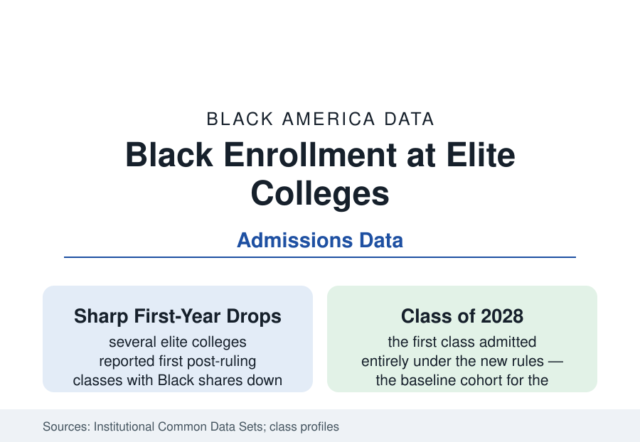

Black Education
Black Students at Elite Colleges: The Post-2023 Enrollment Data
After the Supreme Court ended race-conscious admissions, Black enrollment in the newest classes at several elite colleges fell sharply. The institutional data.

In the summer of 2023 the Supreme Court ended race-conscious admissions in higher education, and the first enrollment data under the new regime arrived with the Class of 2028: several of America's most selective colleges reported Black shares of their entering classes down by a third to a half in their own published figures. Elite admissions enroll a tiny fraction of Black students nationally — the HBCU and public-flagship profiles carry the volume — but their data lead the policy era's measurement. This article reports the elite-enrollment file.
The First Classes: What the Institutions Reported
The reported numbers, campus by campus, formed the era's first dataset. Amherst College's Black share of the entering class fell from about eleven percent to about three percent in its published profile; MIT's fell from the mid-teens to about five percent; Harvard's from about eighteen percent to about fourteen; Brown's from about nine to about five — while other selective institutions (Yale and Princeton reporting smaller declines in their first classes, some publics in states that had banned preferences earlier providing the long-run comparison) filled out a distribution whose median was unmistakably down. The compliance mechanisms are part of the record: applications surged at several campuses (test-optional policies' residue), the share of students declining to state a race rose sharply in the application data (darkening the measurement itself), and the essay and recruitment channels through which colleges may lawfully pursue diversity were rebuilt in a single admissions cycle, with results the second and third classes' data are now grading.
The Long-Run Comparisons: California and Michigan
The natural experiments predate the ruling by a generation. California's Proposition 209 (1996) and Michigan's Proposal 2 (2006) banned preferences at those states' publics, and their flagship data are the literature's baseline: Berkeley and UCLA's Black enrollment fell by half or more immediately and, a quarter-century on, remains below its pre-ban shares (in the four-to-five percent range at Berkeley in recent classes against the campuses' far more diverse state), with the University of California's own analyses documenting the cascade — application discouragement compounding the admissions effect — and the system's enormous subsequent investment in outreach, holistic review, and percentage-plan-style recruiting buying back a portion of the loss. Texas's Top Ten Percent plan and Florida's Talented 20 supply the other structural comparisons: class-rank guarantees sustain flagship diversity partially (and at the price of the segregated high schools that make the ranks diverse, the discipline file's mirror). The post-2023 national data are now running the California experiment at fifty-state scale, with the private elites' endowments and the publics' constraints producing the distribution's spread.
Where the Students Went: The Substitution Data
The system's total is the file's discipline: Black college enrollment overall is governed by the enrollment profile's economics far more than by the elites' gates, and the substitution studies (of the ban states' cohorts) find displaced flagship applicants cascading to less selective institutions — with measured downstream effects on graduation rates and earnings in the flagship-access literature (the 'mismatch' debate's empirical core, which the economists' ban-state studies substantially resolve toward access mattering). The HBCU application surge of the early 2020s (the enrollment profile's renaissance data) predates the ruling; the post-ruling classes' HBCU numbers are being read for its continuation, alongside the graduate and professional pipeline effects the forecasters model: the law and medical cohorts of the 2030s are being composed in these classes, and the legal-education profile's current demographics are the forecast's baseline.
The Pipeline Arithmetic Behind the Gate
The admissions data's deepest layer is the applicant pool's construction: the K-12 files of this section — the funding, discipline, gifted-access, and counseling data — determine who arrives at the elite gate credentialed, and the wealthy-suburb and private-school concentration of the qualified pool (the test-score distributions' upper tail is substantially a wealth distribution in the College Board's own tables) means the gate's demographics were always the pipeline's arithmetic before they were the committee's choices. The responses with data behind them read accordingly: the community-based organizations (QuestBridge's match numbers — thousands of low-income students, heavily of color, placed at elite partners annually; the Posse Foundation's cohorts), the recruitment-travel and fee-waiver expansions of the post-ruling cycles, and the test-policy experiments whose score data the next classes will settle. The elite file's scale honesty closes it: the entire Ivy League enrolls fewer Black freshmen in a year than a single large HBCU — the gate matters as signal and as network, and the nation's Black education happens, as it always has, at volume elsewhere.
Reading the Elite Data
The first post-ruling classes moved exactly as fifty years of ban-state data predicted: down sharply at the most selective gates, partially recoverable by money and effort, and decided upstream in the pipeline either way. The elite file is the education section's smallest numbers and its loudest — a seismograph at the top of a system whose mass, and whose students, live everywhere else.
More in Black Education
Black Educational Attainment: High School Parity, the College Gap
About 89 percent of Black adults hold a high school diploma and one in four holds a bachelor's degree or higher — the attainment ladder, the college completion gap, and the generational trend.
Historically Black Colleges and Universities: Enrollment and Degrees
More than 100 HBCUs enroll roughly 290,000 students and award about one in six Black bachelor's degrees — an outsized share from a small sector. The federal education data.
Black College Enrollment: 2.4 Million Students
About 2.4 million Black students are enrolled in American colleges — nearly two-thirds of them women. The NCES enrollment data by sector, level, and trend.
Source: Institutional Common Data Sets and class profiles (Harvard, Amherst, MIT, Brown and others); U.S. Supreme Court, Students for Fair Admissions v. Harvard (2023); National Center for Education Statistics.